单细胞也有自己的专属语言大模型啦
原文：https://mp.weixin.qq.com/s?__biz=MzAwMzIzOTk5OQ==&mid=2247530864&idx=1&sn=0cea8c77820c3506db4c1b1d9623152a&chksm=9b3c0020ac4b893661d37cf3636d9814284cfcb503839c1f89611ce998d494475c9f2dd7eb81#rd 合集：单细胞云平台
在大模型飞速发展的时代，DeepSeek作为一款国运级应用，迅速走红。其“深度求索”的理念与SeekGene的“探索基因”不谋而合。我们相信，DeepSeek能够为基因探索插上翅膀，而寻因多年积累的知识库、项目经验和应用设计则为深度求索生出应用之手。今天，我们正式推出寻小因——单细胞与空间转录组智能探索的系列应用，旨在为这一领域带来全新的智能解决方案。
https://xunxiaoyin.seekgene.com/#/home
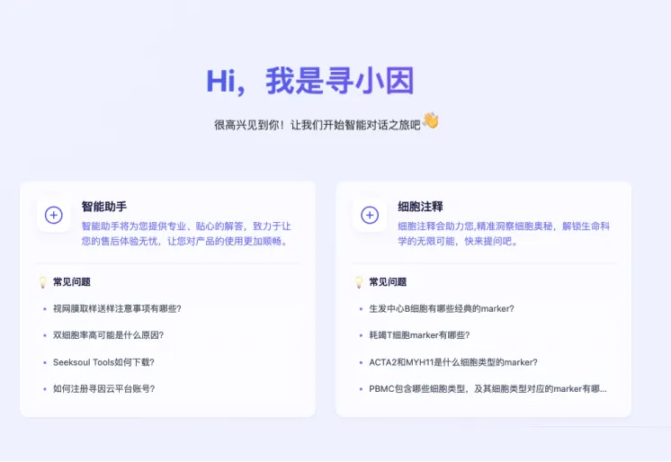
应用一
智能助手-寻因内部知识库 x deepseek 全能知识专家
为什么需要智能助手
在单细胞和空间转录组的研究中，研究者常常面临各种复杂的技术问题，涉及实验设计、数据分析、云平台操作等多个领域。传统上，这些问题需要依赖不同领域的专家逐一解决，耗时耗力。寻小因智能助手应运而生，它集成了单细胞和空间转录组领域的专业知识，能够快速解答各类技术问题，成为您研究中的得力助手。
尽管DeepSeek已经通过海量公开数据训练，具备了广泛的知识储备，但许多公司实验室的实践经验、项目分析技巧等“know-how”并未包含其中。此外，大模型普遍存在的“幻觉”问题，使得其在面对严谨的科研问题时可能存在不确定性。为此，我们为DeepSeek装备了寻因的内部知识库，确保每一个回答都有据可依，成为真正的单细胞和空间转录组专家。
优势
-
准确性：所有回答均附有参考文档或文献，涵盖寻因内部知识库及学术论文，基于450+真实项目经验和120+云平台分析场景。
-
智能性：基于DeepSeek R1模型和快速知识查询架构，确保高效、精准的解答。
-
在线客服支持：如果您的问题超出知识库范围，或对大模型的回答存疑，可通过在线客服与技术专家实时沟通，获得及时解答。
应用案例
- 实验问题
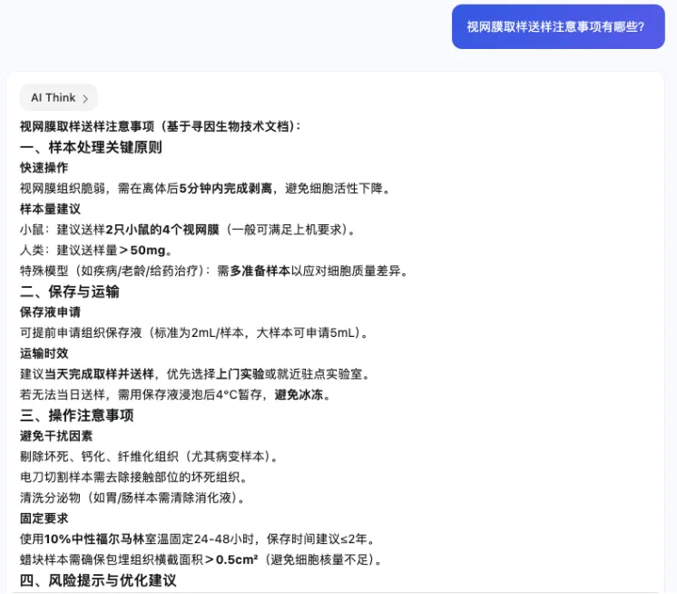
- 生物信息问题
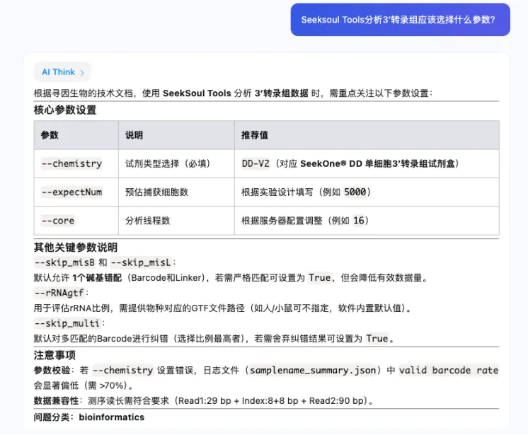
应用二
细胞注释-基于marker 知识库的大模型注释
为什么需要寻小因-细胞注释
我们将寻小因-细胞注释定位为帮助研究者提升手动注释效率的工具。尽管市场上已有众多单细胞自动注释工具，包括基于大模型（如scGPT）和非基于大模型的工具（如singleR），但最终发表的论文通常仍需依赖基于标记（marker）的手动注释。
寻小因-细胞注释不仅支持基于标记进行细胞类型的注释，还能够明确指出用于这些注释的具体标记。我们期望通过寻小因-细胞注释，显著提升手动注释这一必要步骤的效率，为研究者提供更高效的工作流程。
优势
-
基于marker知识库的精准注释：覆盖160+组织类型、449种细胞类型、2.6万Marker基因。
-
“知其所以然”：让您了解“大模型是怎么想的”，以及依据哪些marker来判定细胞类型。
-
简单易用：在寻因的Seeksoul Online云平台上一键点击使用。
应用案例
● 查询细胞marker
可以通过寻小因页面的细胞注释应用，直接提问细胞和marker的相关问题。
pubmed 链接
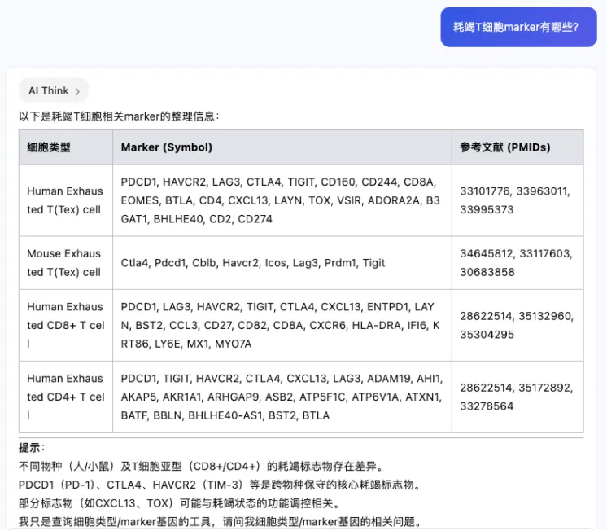
问题方式：
marker->细胞
● 细胞类型注释
如果您是寻因的客户，可以通过寻因的Seeksoul Online云平台使用该功能。在细胞注释模块，通过点击SingleR+Ai注释来实现。
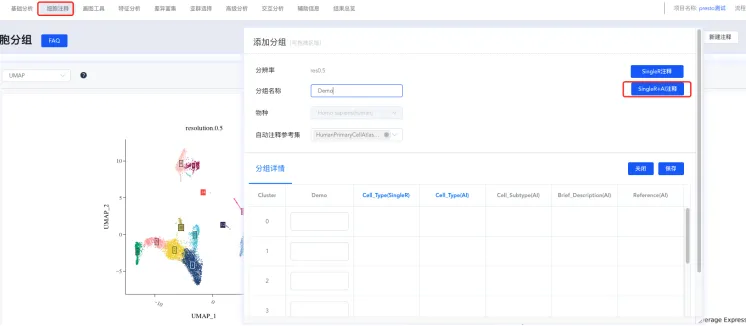
注释结果
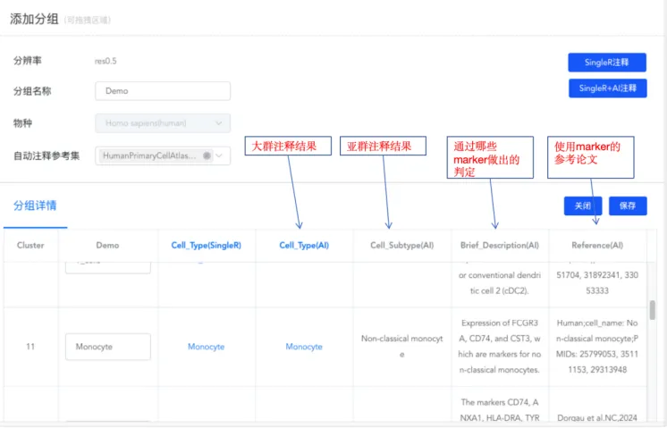
应用三
实验数据库
为什么需要实验数据库
解离是单细胞转录组实验出问题最多，也是实验是否可以成功，影响数据质量的关键因素。所以历史解离数据的，对于新的实验设计至关重要。
优势
-
数据库包含寻因生物上万例真实解离数据
-
检索支持模糊查询，如果没有精确匹配到，大模型会推荐实验数据中的相近物种/组织结果用于参考。
-
包含大模型的统计分析以及可视化展示
应用案例
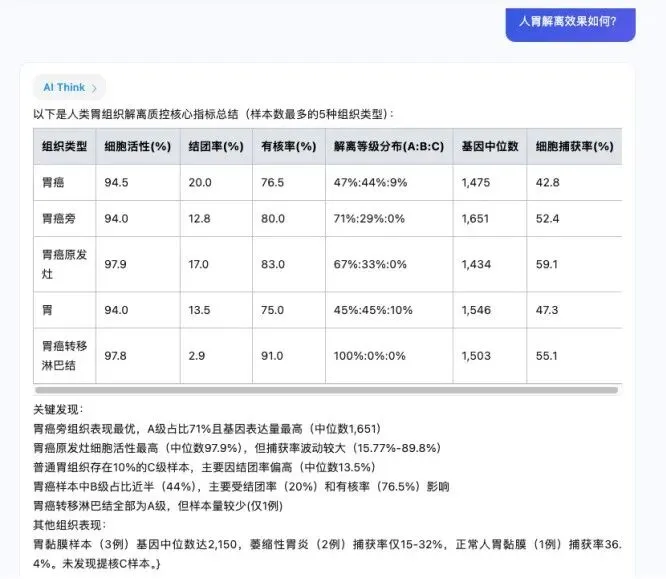
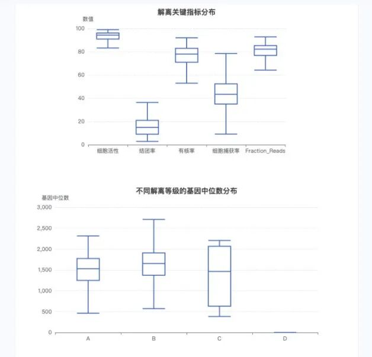
更多应用展望
以上两个应用仅是寻小因的初步尝试，更多杀手级应用正在紧锣密鼓地内测中，预计将在今年陆续与大家见面。无论您是刚刚踏入单细胞和空间转录组领域的新手，还是经验丰富的研究者，寻小因都将为您提供强大的支持，助力您在科研道路上更加高效、精准。
-
新手入门：为您答疑解惑，助您快速掌握领域知识。
-
资深研究者：完备的知识库和大模型支持，帮助您查漏补缺，提升研究效率。
-
寻因客户：由DeepSeek赋能的Seeksoul Online，让您想到即可做到。
附录
智能助手包含的数据库
● 实验
● 测序建库原理
● 实验中心资料
● 产品说明书
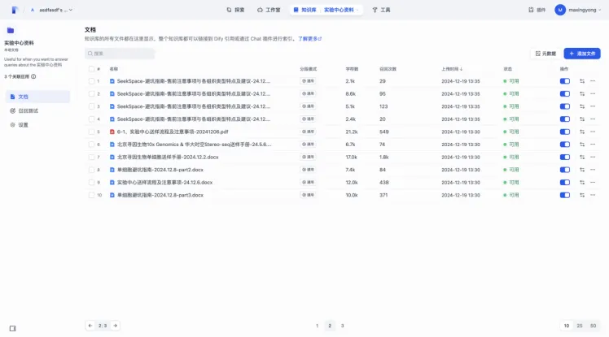
● 分析
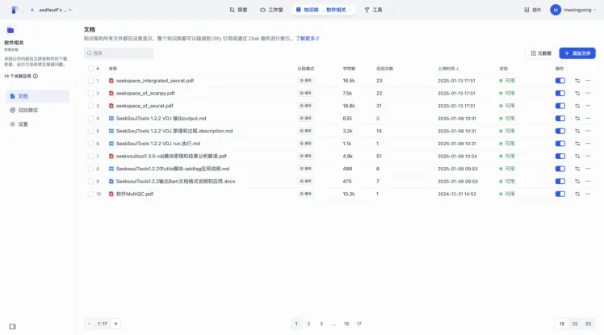
● 软件使用和安装报错问题
记录和总结了SeekSoulTools和SeekSpaceTools在安装使用过程中遇到的一些报错和处理办法和处理经验
● 全序列数据分析
● 软件相关
寻因公司内部自主研发软件的下载、安装、运行方法和常见报错问题。
● 数据分析工具相关
● 基础知识
● 基础知识
● 云平台
● 云平台相关
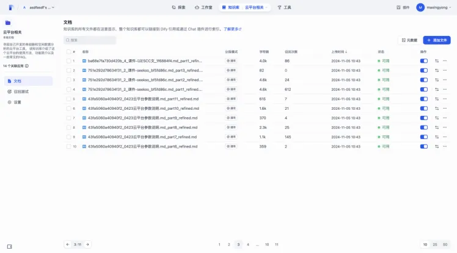
寻因自己开发的单细胞和空间数据分析的云平台工具， 该知识库介绍了这个云平台的使用方法、功能简介以及一些常见的FAQ。
● 云平台doc
● 内部项目
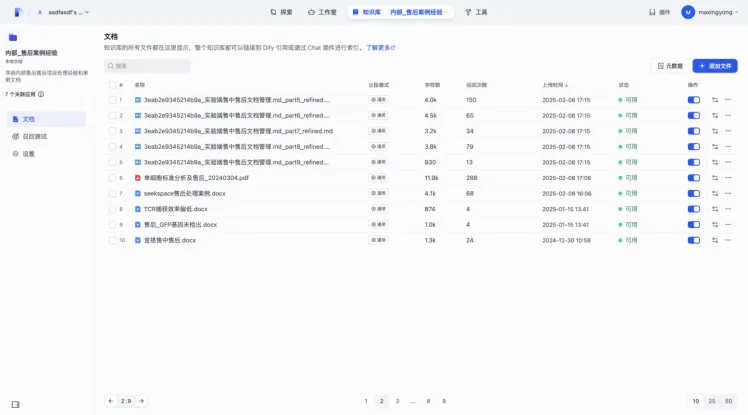
● 内部_生信标准执行
● 内部_售后案例经验
寻因内部售后售后项目处理经验和案例文档
● 内部_项目经验
● 生信数据库
● 寻因已发表文章
收录使用寻因相关产品的发表的文章-202412月
● 注释基因marker或基因集
内部手动从文献中手动收集的一些marker 基因和基因集
● 寻因已有参考基因组列表
另外，听说你想两天学会单细胞分析，我们准备了直播和礼物哦：